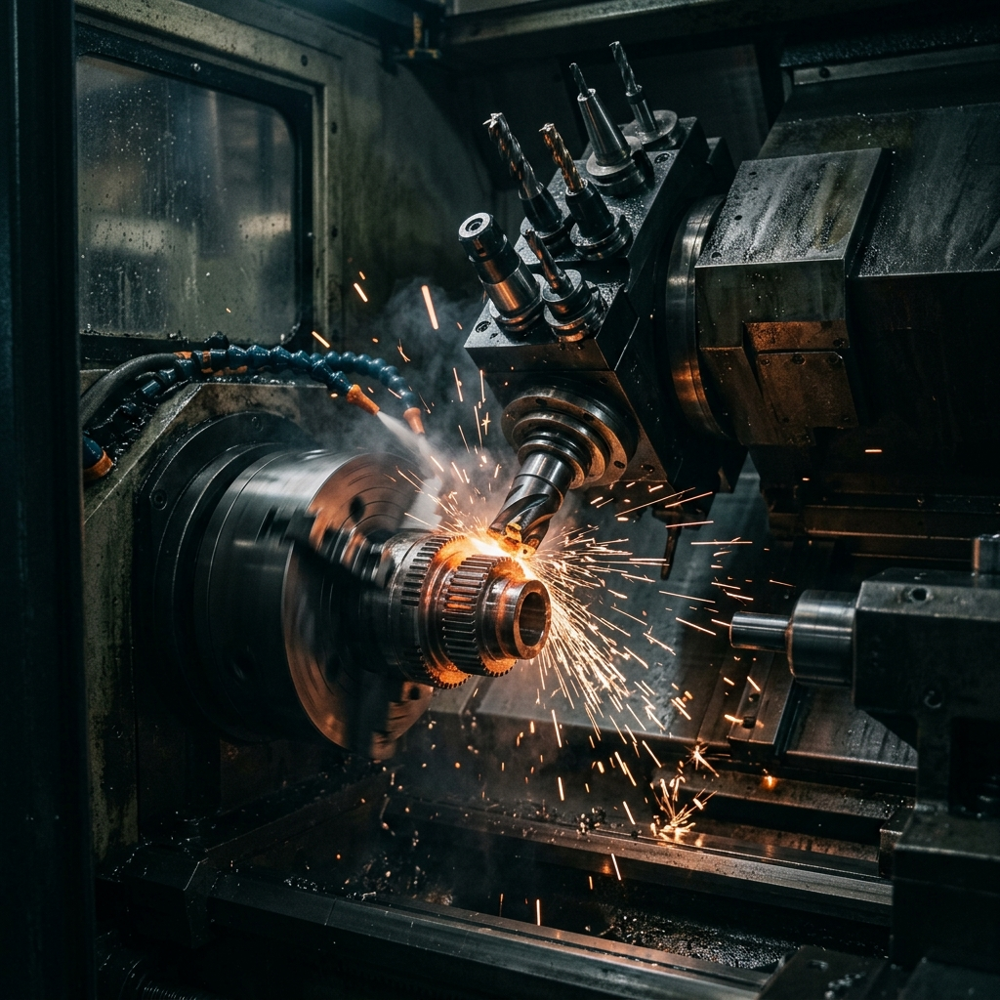
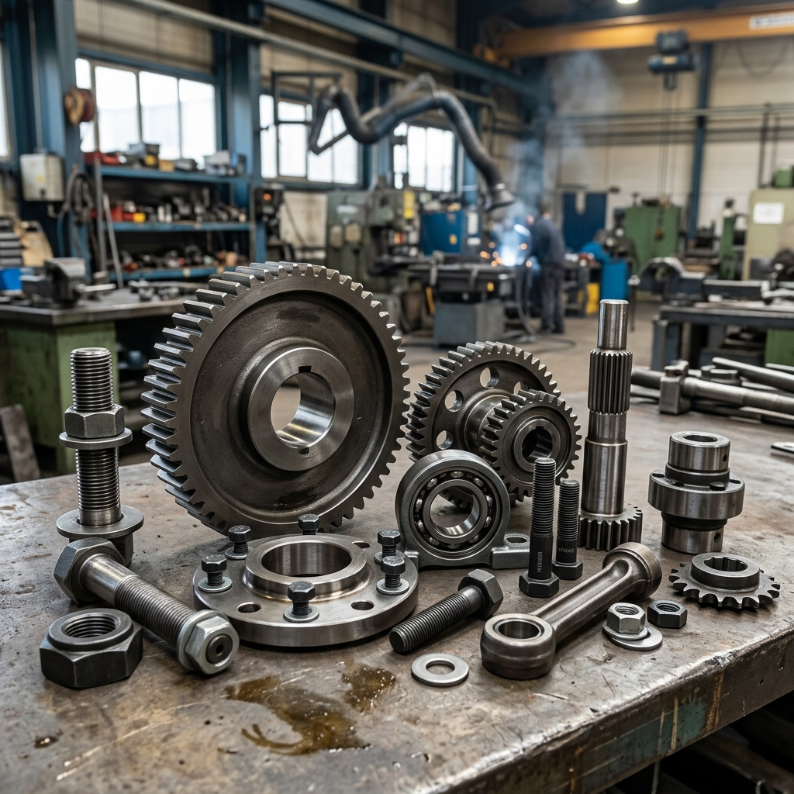
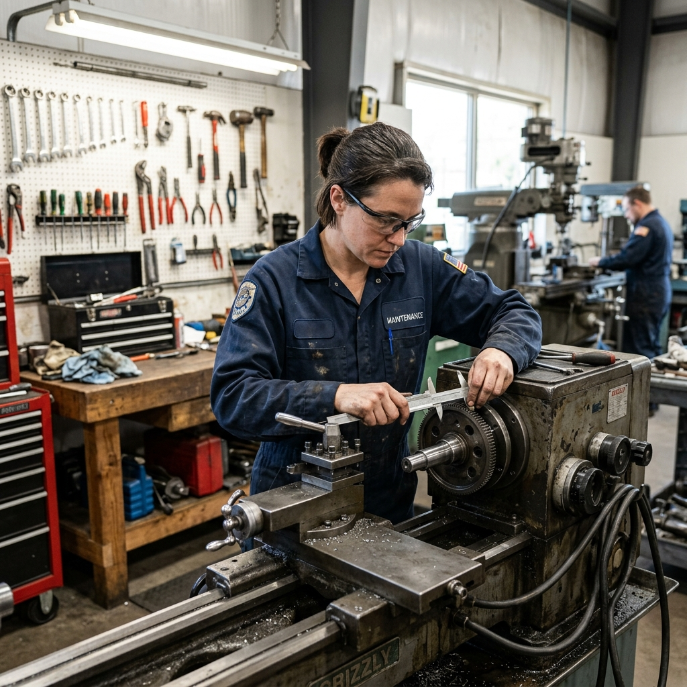

We specialize in manufacturing precision cutting tools, drill bits, taps, dies, and custom-engineered components for a wide range of industries. Each tool is crafted from carefully selected raw materials and undergoes a detailed machining process to ensure dimensional accuracy.
Our unit is equipped with CNC machines, grinding equipment, and calibration tools that allow us to produce components within tight tolerances. Whether you need a one-time prototype or a recurring batch, we handle it with the same level of care.

We manufacture heavy-duty industrial parts designed to handle the demands of construction sites, manufacturing floors, and mining operations. Our focus is on producing parts that last — made from high-grade steel, alloys, and heat-treated materials.
We work directly with engineers and procurement teams to understand exact load requirements and compatibility specifications before production. Every batch is tested before dispatch.

Tools and machinery parts wear out over time, but replacement is not always the most practical option. Our repair and reconditioning service extends the working life of your tools by restoring them to near-original specifications.
We handle resharpening, re-coating, dimensional restoration, and mechanical repairs. Our turnaround time is designed to minimize your downtime. We also offer scheduled maintenance contracts for businesses that want to stay ahead of breakdowns.
We supply tools and industrial components in bulk to factories, construction sites, workshops, and government projects. Our supply contracts are simple and reliable — you specify quantities and delivery schedules, and we handle the rest.
We maintain stocked inventory of commonly needed items and offer lead times as short as 48 hours for standard orders. For customized bulk orders, we discuss feasibility and timelines upfront.